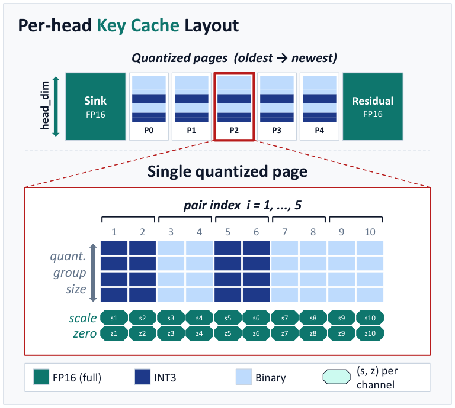

You must shrink a very long notebook to fit in a pocket. Instead of keeping sharp copies of the pages with the darkest ink, you keep sharp copies of the pages your questions actually point to and blur the rest. You work out which pages those are from the first few pages, and the choice holds to the last line.
아주 긴 공책을 주머니에 들어갈 만큼 줄여야 한다고 해 보자. 잉크가 진한 페이지를 선명하게 남기는 대신, 질문이 실제로 가리키는 페이지를 선명하게 남기고 나머지는 흐리게 줄인다. 어느 페이지인지는 처음 몇 장만 보고 정하는데, 그 선택이 마지막 줄까지 그대로 맞는다.
How it works: two bit widths, one mask per head작동 방식은 비트 두 종류와 헤드별 마스크 하나
Only the key cache gets mixed precision; values get ordinary per-token 2-bit quantization. A pilot study showed keys are the sensitive half.
혼합 정밀도는 키 캐시에만 쓰고, 값 캐시는 토큰 단위의 평범한 2비트 양자화를 쓴다. 사전 실험에서 키 쪽이 민감하다는 것이 드러났기 때문이다.

- Score pairs at prefill.프리필에서 쌍에 점수 매기기.Average query and key pair norms over prompt tokens and multiply them, sharing query heads under GQA.프롬프트 토큰에서 쿼리와 키의 쌍 노름을 평균 내어 곱하고, GQA에서는 쿼리 헤드끼리 평균한다.
- Store a bit mask.비트 마스크 저장.The top pairs per KV head become one mask, with no offline calibration and no per-page index lists.KV 헤드마다 상위 쌍을 마스크 하나로 저장한다. 오프라인 보정도, 페이지별 인덱스 목록도 없다.
- Quantize every 128 tokens.128토큰마다 양자화.When the FP16 buffer fills, keys go to 3 or 1 bits by the mask; 1-bit groups use midpoint levels instead of min and max.FP16 버퍼가 차면 마스크에 따라 키를 3비트나 1비트로 바꾼다. 1비트 그룹은 최솟값과 최댓값 대신 구간 중간값을 쓴다.
Key point: ask what the query sees, and ask once핵심은 쿼리가 보는 것을 한 번만 묻기
Every swap in the ablation costs accuracy, and re-selecting pairs during decoding is worse than trusting the prompt. Pairs picked at prefill overlap decoding-time salient pairs at about 0.72 even after 32K generated tokens.
어블레이션에서 무엇을 바꾸든 정확도가 떨어지고, 디코딩 중에 쌍을 다시 고르면 프롬프트를 믿을 때보다 나쁘다. 프리필에서 고른 쌍은 3만 2천 토큰을 생성한 뒤에도 디코딩 시점의 중요한 쌍과 약 0.72 겹친다.
Results: whole KV cache at about 2 bits결과는 KV 캐시 전체를 약 2비트로
With values also at 2 bits, PN-Mix loses 2 points on AIME24 where KIVI loses 20. On four general models at 2.26 key bits it stays within one point of FP16.
값 캐시까지 2비트로 줄여도 PN-Mix는 AIME24에서 2점만 잃고, KIVI는 20점을 잃는다. 일반 모델 네 개에서도 키 2.26비트로 FP16과 1점 이내를 지킨다.
| Method | K bits | AIME24 | AIME25 |
|---|---|---|---|
| FP16 | 16 | 76.33 | 67.00 |
| KIVI | 2.25 | 56.33 | 51.33 |
| ChanMix | 2.32 | 60.66 | 57.00 |
| Kitty | 2.39 | 71.33 | 62.00 |
| PN-Mix (1) | 2.26 | 74.67 | 64.00 |
| PN-Mix (2) | 2.29 | 74.33 | 65.33 |
Below 2.25 bits the gap turns into a cliff. KIVI and Kitty fall to near zero by 2 bits, while PN-Mix gives up under 9 points even at 1.45 bits.
2.25비트 아래로 내려가면 차이가 절벽이 된다. KIVI와 Kitty는 2비트 무렵 0점 가까이 무너지고, PN-Mix는 1.45비트에서도 9점 미만만 내준다.
When you compress a cache for long reasoning, rank what to protect by its effect on attention logits, which here means multiplying in the query side. The prompt alone predicts that ranking well enough to freeze it for 32K tokens.긴 추론을 위해 캐시를 압축할 때는 무엇을 지킬지를 어텐션 로짓에 주는 영향으로 정하자. 여기서는 쿼리 쪽을 함께 곱하는 것이다. 그 순위는 프롬프트만으로도 충분히 예측되어 3만 2천 토큰 동안 고정해도 된다.
At batch 1 decoding is slower than FP16 (2036 s vs 1299 s for a 32K AIME trace), so the win comes from fitting bigger batches. Several AIME gaps to Kitty are smaller than the 3–7 point std, and only 7B–8B reasoning models were tested on AIME.배치 1에서는 디코딩이 FP16보다 느리다(32K AIME 추론에서 2036초 대 1299초). 이득은 더 큰 배치를 올릴 수 있다는 데서 나온다. Kitty와의 AIME 차이 중 여럿은 3~7점인 표준편차보다 작고, AIME에서는 7B~8B 추론 모델만 시험했다.